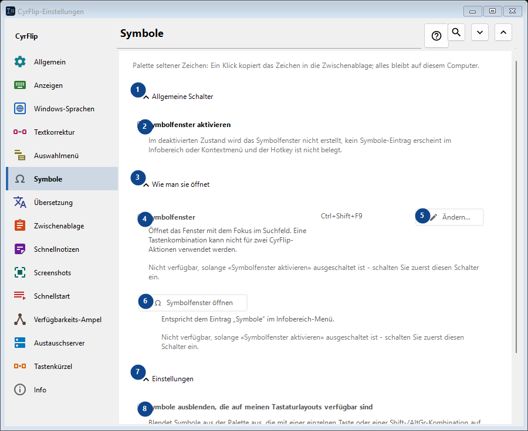
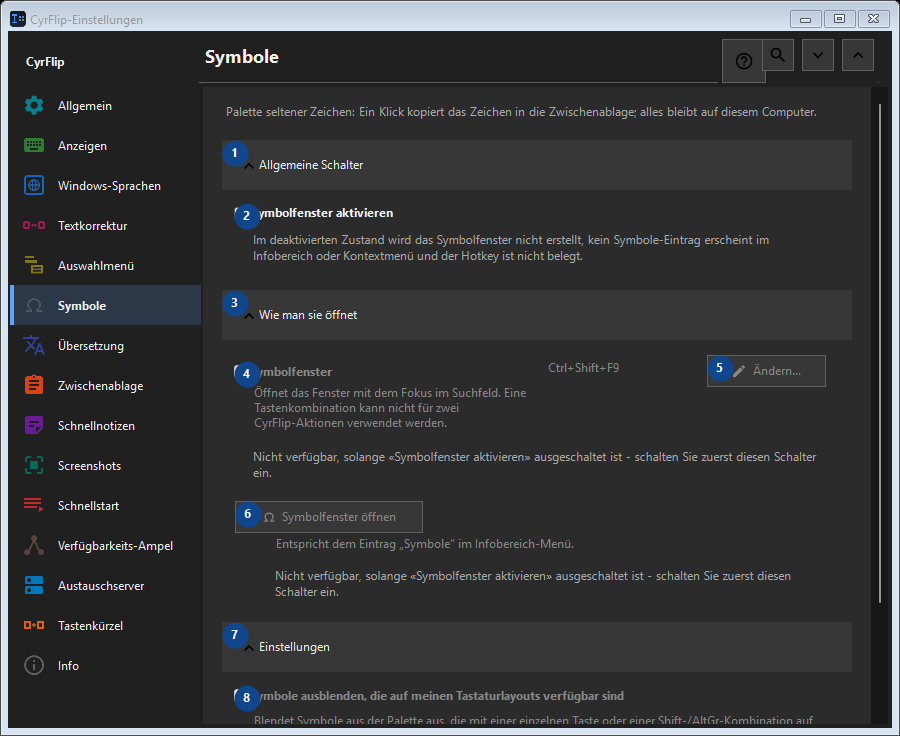

Symbole
Zweck
Palette seltener Zeichen: Ein Klick kopiert das Zeichen in die Zwischenablage; alles bleibt auf diesem Computer.


Reihenfolge
Einstellungen gelten sofort. Eine feste Reihenfolge ist nicht nötig; nutzen Sie die Gruppen unten.
Elemente
1. Allgemeine Schalter
Nutzen Sie diesen Befehl für die genannte Aktion. Lesen Sie eine Bestätigung, bevor Sie zustimmen.
Ihre Tastenkürzel2. Symbolfenster aktivieren
Im deaktivierten Zustand wird das Symbolfenster nicht erstellt, kein Symbole-Eintrag erscheint im Infobereich oder Kontextmenü und der Hotkey ist nicht belegt.
Ihre Tastenkürzel3. Wie man sie öffnet
Nutzen Sie diesen Befehl für die genannte Aktion. Lesen Sie eine Bestätigung, bevor Sie zustimmen.
Ihre Tastenkürzel4. Symbolfenster
Nicht verfügbar, solange «Symbolfenster aktivieren» ausgeschaltet ist - schalten Sie zuerst diesen Schalter ein. Dieses Element ist derzeit nicht verfügbar. Aktivieren Sie zuerst die Funktion oder wählen Sie einen Eintrag.
Ihre Tastenkürzel5. Ändern - Symbolfenster
Nicht verfügbar, solange «Symbolfenster aktivieren» ausgeschaltet ist - schalten Sie zuerst diesen Schalter ein. Dieses Element ist derzeit nicht verfügbar. Aktivieren Sie zuerst die Funktion oder wählen Sie einen Eintrag.
Ihre Tastenkürzel6. Symbolfenster öffnen
Nicht verfügbar, solange «Symbolfenster aktivieren» ausgeschaltet ist - schalten Sie zuerst diesen Schalter ein. Dieses Element ist derzeit nicht verfügbar. Aktivieren Sie zuerst die Funktion oder wählen Sie einen Eintrag.
Ihre Tastenkürzel7. Einstellungen
Nutzen Sie diesen Befehl für die genannte Aktion. Lesen Sie eine Bestätigung, bevor Sie zustimmen.
Ihre Tastenkürzel8. Symbole ausblenden, die auf meinen Tastaturlayouts verfügbar sind
Nicht verfügbar, solange «Symbolfenster aktivieren» ausgeschaltet ist - schalten Sie zuerst diesen Schalter ein. Dieses Element ist derzeit nicht verfügbar. Aktivieren Sie zuerst die Funktion oder wählen Sie einen Eintrag.
Ihre Tastenkürzel